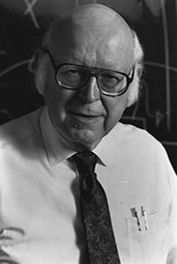
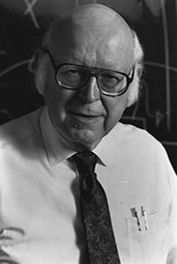

  |
1975 год Herbert A. Simon (1916–2001) и Allen Newell (1927–1992) «За их общие усилия в течение двадцати лет, вначале совместно с J. C. Shaw, в составе корпорации RAND, впоследствии вместе с профессорско-преподавательским составом и студенческими группами университета Карнеги — Меллон, которые ознаменовались вкладом в искусственный интеллект, психологию механизма человеческого восприятия и обработку списков» |
Страна: США
Образование: Allen Newell - Магистр науки в области математики, Принстонский университет, 1950
Herbert A. Simon - Доктор философии в области политических наук, Чикагский университет, 1943
О лауреатах
Чтобы реализовать иерархическую ассоциативную модель разума, Simon и Newell работали с John C. Shaw, программистом стратегического исследовательского центра RAND для разработки первого языка обработки списков IPL (Information Processing Language). Хотя IPL, низкоуровневый язык, впоследствии был заменен более мощным и высокопроизводительным языком высокого уровня LISP, он оказал большое влияние на развитие более поздних языков обработки списков, включая и сам LISP. Их совместно разработанная программа Logic Theorist считается первой успешной программой с искусственным интеллектом. Newell до 1970-х годов работал в областях распознавания речи, компьютерных архитектур и взаимодействий между компьютером и человеком, но после переключился на проект Soar, который был его попыткой разработать единую теорию познания. Среди основных интересов Simon были AI, разработка приложений.
Ключевые слова: Information processing language, Soar, Logic Theory Machine, General Problem Solver, Bounded rationality
Краткая библиография
| 1. |
Newell, Allen and Herbert A. Simon, "The Logic Theory Machine: A Complex Information Processing System," IRE Transactions on Information Theory, 1956, Vol. 2, Num. 3, pp. 61-79. Статья представляет программу Logic Theorist для людей, не связанных с RAND. |
| 2. |
Newell, Allen, J.C. Shaw, & Herbert A. Simon, “Elements of a theory of human problem solving,” Psychological Review, Vol. 65 (1958), pp. 151-166. В этой статье показана модель решения проблем человеческого восприятия с использованием Logic Theorist и General Problem Solver. |
| 3. |
Feigenbaum, Edward A. and Herbert A. Simon, “A theory of the serial position effect,” British Journal of Psychology, Vol. 53, 1962, pp. 307-320 В статье представлена система EPAM (Elementary Perceiver and Memorizer, как модель человеческой памяти и способности человека к обучению. |